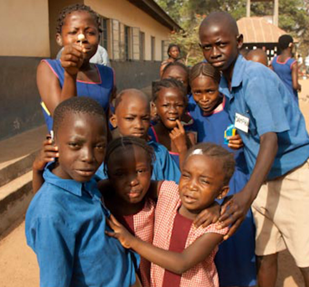
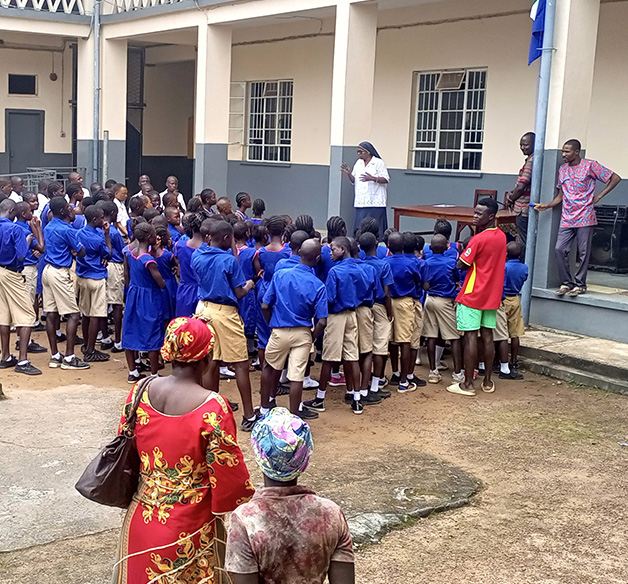

📍 Teko Road, Makeni • ✉️ stjosephshischool@gmail.com
DONATEAbout us • Est. 1979
St Joseph's School for the Hearing Impaired has served deaf children from all over Sierra Leone for 40+ years. 250 pupils aged 4–18, 110 boarders from remote areas, 58 staff led by Director Sister Amala Santiago.


Fully equipped Audiology Laboratory — the only such facility in Sierra Leone. In an impoverished society where disabled children are marginalised and sometimes abandoned, we offer shelter, language, schooling and vocational skills: carpentry, IT, dressmaking, hairdressing, hospitality, agriculture and animal husbandry.